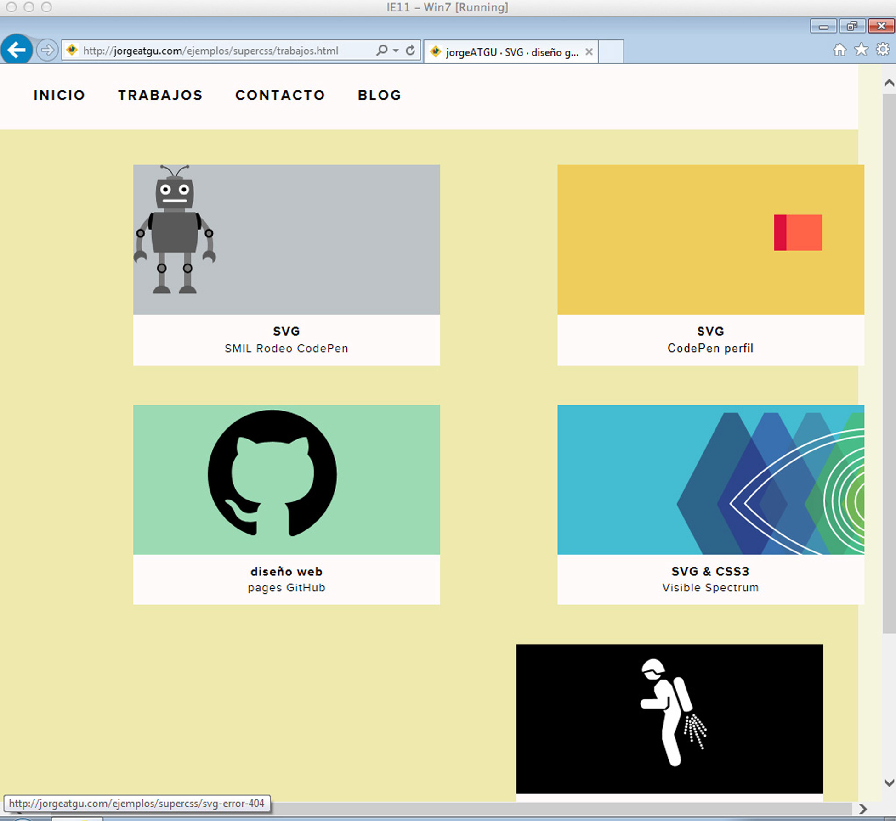
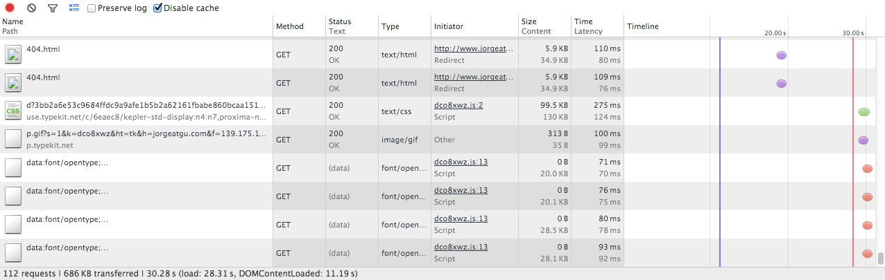
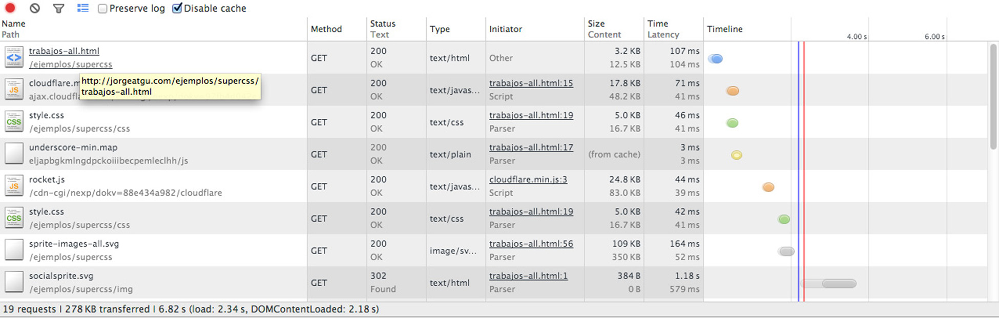

DRY con group, defs y use
Dont repeat yourself que viene a ser que no te repitas a ti mismo. Si ya tenemos una figura que ocupa veinte líneas para que vamos a repetir las veinte líneas si con una sola línea nos basta y nos sobra. En este capítulo vamos a ver como lo podemos hacer.
Group
La etiqueta <g> representa a los grupos, y como su nombre indica la utilizamos para agrupar los diferentes elementos que estén dentro de la propia etiqueta.
En ella podemos definir una serie de figuras y aplicarles los mismos colores de fondo, grosor y color del borde. A los grupos también le podemos aplicar filtros, animaciones, transformaciones y atributos CSS.
Para mover un grupo vamos a tener que recurrir a transform=”translate” ya que no disponemos de las coordenadas x e y. Lo mismo para el tamaño, el cuál si queremos modificar a la vez lo haremos con transform=”scale”.
<g fill="crimson" transform="rotate(45)">
<rect x="100" y="30" width="40" height="40"/>
<rect x="150" y="30" width="40" height="40"/>
<rect x="200" y="30" width="40" height="40"/>
<rect x="250" y="30" width="40" height="40"/>
<rect x="300" y="30" width="40" height="40"/>
</g>

En el anterior ejemplo podemos ver como hemos indicado a la vez el mismo color y las mismas transformaciones a todos los rectángulos.
Soporte

Defs y use
Ahora que ya sabemos como crear nuestras propias formas básicas, patrones, degradados y aplicar a todos ellos múltiples transformaciones vamos a ver como podemos reutilizar todo este código para no tener que ir repitiendo a lo largo de documento los mismos elementos con el consecuente ahorro de código y sobre todo de tiempo.
El código que queramos repetir a lo largo del documento deberá de ir entre <defs> </defs> a los elementos les indicaremos un id=”” con el nombre que queramos y a continuación para usar este código utilizaremos la etiqueta <use>, lo posicionaremos en el documento a través de las coordenadas x e y, le podemos aplicar transformaciones como scale, matrix, rotate etc...
Todo el código que esté dentro de la etiquetas <defs> no se va a tener en cuenta a no ser que utilicemos la etiqueta <use>.
Aunque su uso no es obligatorio la W3C recomienda utilizar estas etiquetas para hacer nuestro código mucho más accesible y legible. Vamos a ver unos ejemplo para que nos quede más claro su funcionamiento.
<defs>
<rect id="rectangulo" width="40" height="40"/>
<circle id="circulo" r="30"/>
</defs>
<use xlink:href="#rectangulo" x="300" y="200"fill="crimson"/>
<use xlink:href="#circulo" x="250" y="300" fill="gold"/>
<use xlink:href="#circulo" x="600" y="200" fill="darkslategrey"/>
<use xlink:href="#rectangulo"x="700" y="300" fill="navajowhite"/>

En el ejemplo anterior hemos definido entre las etiquetas <defs></defs> un elemento <rect> con un id=”rectangulo” y un elemento <circle> con un id=”circulo”. Ahora vamos a llamar a estos dos elementos tantas veces como queramos a través de la etiqueta <use> y para ello vamos a utilizar el atributo xlink:href con la # antes del nombre del id, también le indicamos la posición del elemento a través de las coordenadas horizontal y vertical.
Una advertencia, como podéis observar en el código los elementos <rect> y <circle> no tienen un color definido, esto se debe a que si le indicamos un color al elemento que está en <defs> los elementos que creamos a través del <use> heredarán ese color y no tendremos oportunidad alguna de cambiar el color, así que si la idea es que cada rectángulo tenga un color diferente tendremos que dejar sin definir el color. En el caso de que no definamos el color ni en <defs> ni en <use> el color por defecto será negro.
Vamos a ver qué podemos hacer si combinamos <defs> + <use> + <g>
<defs>
<g id="cuadrados" fill="crimson" transform="translate(150 50)">
<rect x="30" y="30" width="40" height="40"/>
<rect x="80" y="30" width="40" height="40"/>
<rect x="130" y="30" width="40" height="40"/>
<rect x="180" y="30" width="40" height="40"/>
<rect x="230" y="30" width="40" height="40"/>
</g>
</defs>
<use xlink:href="#cuadrados"/>
<use xlink:href="#cuadrados" transform="translate(0 100)"/>
<use xlink:href="#cuadrados" transform="translate(0 100) rotate(45)"/>
<use xlink:href="#cuadrados" transform="scale(.5)"/>
<use xlink:href="#cuadrados" y="400" opacity=".5"/>

En este ejemplo con cinco etiquetas <use> hemos creado cinco grupos de cinco rectángulos cada uno, y a cada grupo le hemos dado una propiedad diferente.
Soporte
Usando CSS para aplicar estilos
Vamos a ver cómo podemos aplicar un efecto de filtro, un patrón y un degradado a los elementos de nuestro SVG a través de CSS.
El método es sencillo, una vez declarados nuestros efectos entre las etiquetas SVG vamos a crear una clase en nuestro achivo CSS, y en esa clase vamos a declarar el efecto por ejemplo el <pattern> declaramos con fill: url(#patron) ahora volvemos al HTML y aplicamos la clase al elemento que queremos que reciba el efecto.
{lang="css", linenos="off"}
.patron {
fill: url(#patron);
}
.filtro {
filter: url(#filtro);
}
.degradado {
fill: url(#degradado);
}
<defs>
<pattern id="patron" width="40" height="40" patternUnits="userSpaceOnUse">
<circle cx="20" cy="20" r="20" fill="crimson"/>
</pattern>
<filter id="filtro" filterUnits="objectBoundingBox">
<feColorMatrix type="hueRotate" in="SourceGraphic" values="60"/>
</filter>
<linearGradient id="degradado" gradientUnits="objectBoundingBox">
<stop offset="0%" stop-color="khaki"/>
<stop offset="10%" stop-color="khaki"/>
<stop offset="10%" stop-color="crimson"/>
<stop offset="20%" stop-color="crimson"/>
<stop offset="20%" stop-color="khaki"/>
<stop offset="30%" stop-color="khaki"/>
<stop offset="30%" stop-color="crimson"/>
<stop offset="40%" stop-color="crimson"/>
<stop offset="40%" stop-color="khaki"/>
<stop offset="50%" stop-color="khaki"/>
<stop offset="50%" stop-color="crimson"/>
<stop offset="60%" stop-color="crimson"/>
<stop offset="60%" stop-color="khaki"/>
<stop offset="70%" stop-color="khaki"/>
<stop offset="70%" stop-color="crimson"/>
<stop offset="80%" stop-color="crimson"/>
<stop offset="80%" stop-color="khaki"/>
<stop offset="90%" stop-color="khaki"/>
<stop offset="90%" stop-color="crimson"/>
<stop offset="100%" stop-color="crimson"/>
</linearGradient>
</defs>
<image class="filtro" xlink:href="zgzsky.jpg" width="200" height="200" y="50" x="150"/>
<rect class="patron" width="200" height="200" x="500" y="150"/>
<rect class="degradado" width="200" height="200" x="750" y="150"/>

Soporte
En IE9 y iOS5 no se aplica el efecto del filtro ya que no están soportados.
Sprites con SVG
A continuación vamos a ver como podemos crear un sprite con SVG y todas las ventajas que ello conlleva.
Ahora vamos a preparar el archivo que vamos a utilizar como sprite. Lo primero es crear un archivo XML con la extensión SVG, lo vamos a llamar sprite-images.svg. Las medidas que vaya a tener nuestro SVG no nos tienen que preocupar ya que vamos a ir seleccionando partes que están dentro de el, aún así y aunque no es necesario yo le he dado un viewBox="0 0 2976.5 299" vuelvo a repetir que las medidas no nos tiene que preocupar, podéis hacer todas las pruebas que queráis modificando el viewBox y si hacemos todo el proceso bien el resultado va a ser el mismo. Para aquellos que no estén familiriazados con SVG ni con el viewBox aquí os dejo un artículo que escribí sobre el viewBox, también os dejo otro de Sara Soudeian bastante más extenso y con una herramienta visual que deja bastante claro todo el funcionamiento del viewBox.
Vamos a continuar preparando nuestro archivo de sprites. Ahora vamos a ir copiando el código de los archivos que queremos incluir dentro del sprite. Vamos a copiar todo el código que este comprendido entre las etiquetas <svg></svg>, las etiquetas no las queremos. Ahora nos vamos a ir a nuestro sprite-images.svg y vamos a pegar todo el código entre dos etiquetas <g></g> a la etiqueta de apertura le vamos a asignar un id="robot-codepen" para mas tarde poder hacer referencia al id="". Si dejamos al grupo sin nombre no vamos a poder llamarlo. Con los cuatro archivos restantes vamos a hacer exactamente lo mismo, al final tendremos que tener un archivo con el siguiente código. He omitido el código que tiene cada archivo SVG para no hacer muy extenso el ejemplo.
<svg xmlns="http://www.w3.org/2000/svg" viewBox="0 0 2976.5 299">
<g id="robot-codepen">
----->Aquí va todo el código de robot-codepen
</g>
<g id="perfil-codepen">
----->Aquí va todo el código de perfil-codepen
</g>
<g id="github">
----->Aquí va todo el código de github
</g>
<g id="visible">
----->Aquí va todo el código de visible
</g>
<g id="filtros">
----->Aquí va todo el código de filtros
</g>
</svg>
Ahora que ya tenemos preparado nuestro sprite vamos a utilizarlo. Vamos a utilizar de nuevo la etiqueta <use>, ahora en el atributo xlink:href="" le vamos a indicar la ruta donde se encuentra nuestro sprite-images.svg, en mi caso esta en la carpeta raíz así que con poner el nombre es suficiente, en caso de que estuviera en una carpeta images la ruta sería la siguiente images/sprite-images.svg. Ahora la ruta va acompañada de una almohadilla(#) y el nombre del grupo donde estaba la imagen, en primer lugar vamos a llamar al SVG robot CodePen que estaba dentro del grupo <g id="robot-codepen> quedando la etiqueta <use>de la siguiente manera:
<svg viewBox="0 0 595.3 299" class="recuadro">
<use xlink:href="sprite-images.svg#robot-codepen"/>
</svg>
Una vez incluidas todas las imágenes el código quedará de la siguiente manera:
<svg viewBox="0 0 595.3 299" class="recuadro">
<use xlink:href="sprite-images.svg#robot-codepen"/>
</svg>
-->HTML
<svg viewBox="0 0 595.3 299" class="recuadro">
<use xlink:href="sprite-images.svg#perfil-codepen"/>
</svg>
-->HTML
<svg viewBox="0 0 595.3 299" class="recuadro">
<use xlink:href="sprite-images.svg#github"/>
</svg>
-->HTML
<svg viewBox="0 0 595.3 299" class="recuadro">
<use xlink:href="sprite-images.svg#visible"/>
</svg>
-->HTML
<svg viewBox="0 0 595.3 299" class="recuadro">
<use xlink:href="sprite-images.svg#filtros"/>
</svg>
También he añadido a los SVG una clase de CSS para modificar el tamaño a nuestro gusto.
{lang="css", linenos="off"}
.recuadro {
width: 350px;
height: 176px;
}
Por desgracia si hacemos todo esto en local no vamos a ver ningún resultado a no ser que tengamos un servidor local o utilicemos en nuestro flujo de trabajo programas como CodeKit o GhostLab. Si no utilizamos ninguna de estas opciones tenemos que subir todos los archivos a nuestro propio servidor para poder ver todo en funcionamiento. A continuación he subido todo el ejemplo a mi web para que lo veáis en funcionamiento.
Un último apunte, cualquier elemento que contenga un id="" en SVG puede ser reutilizado a través de use aunque no este dentro de las etiquetas defs. Aún así desde la W3C nos recomiendan que todos estos elementos vayan dentro de defs para que nuestro código sea mas legible y accesible.
Soporte
Este método como vamos a ver en la siguiente sección no tiene soporte en IE.
Mucho cuidado los SVG que estén dentro del sprite y que contengan filtros o degradados ya que solo se van a ver en Firefox. En Chrome, Opera y Safari veremos la figura o forma que lleve el degradado pero su color de relleno será negro. En el caso de los filtros algunos se van a ver en negro y otros directamente no se mostrarán.
Malas y buenas noticias.
Las malas son que esto no tiene soporte en ninguna versión de Internet Explorer, tampoco en IE11. Como suele pasar este método funciona sin ningún tipo de problema en los navegadores modernos.
svg4everybody
Las buenas es que como siempre hay alguien haciendo cosas que molan por amor al arte, en este caso Jonathan Neal se ha currado un polyfill para que funcione en Internet Explorer. Simplemente tenemos que subir el script a nuestro servidor y agregar el siguiente código con la ruta donde está alojado nuestro script a nuestro HTML <script src="js/svg4everybody.js"></script>. Que menos que darle una estrellita al repo de GitHub.
La demo que he subido a mi web lleva incluido el polyfill para que veáis que si que funciona en ese navegador llamado Internet Explorer.

svgxuse
Otra alternativa para dar soporte a Internet Explorer 9, 10 y 11 es svgxuse creada por Keyamoon, conocido por se el creador de Icomoon. Svgxuse es una librería mas ligera que svg4everybody ya que carece de soporte para las versiones anteriores a Internet Explorer 9. En navegadores con soporte la librería tampoco hara ninguna petición extra.
El uso es bastante sencillo, simplemente vamos a cargar la librería en nuestro HTML con <script src="svgxuse.js" defer></script>
El repo de GitHub de svgxuse
COMPARATIVA
Y para terminar una pequeña comparativa.
Mi página de trabajos con los SVG cargados a través de la etiqueta <object> mas un fallback para navegadores que no soportan SVG.

Mi página de trabajos con los SVG cargados a través de images-sprites.svg sin fallback alguno.

Como podéis apreciar en las imágenes me ahorro un montón de request y la página carga mucho más rápido.
Lo único malo es que cuando utilizamos esta técnica de importar partes de otro SVG aquellos que contengan filtros no se van a importar. Tampoco importa los degradados, así que aquellos elementos que contengan degradados se quedarán de color negro.
Fragmentos identificadores
Los fragmentos identificadores son otro método para poder hacer una llamada a una parte en concreto de un SVG. La llamada la podemos realizar desde el HTML con la etiqueta img o desde el CSS con background-image: a través del ID del elemento y también a través de la etiqueta view.
Ademas de hacer la llamada al fragmento también lo podemos modificar con lo siguientes atributos. Todos ellos los vamos a incluir entre paréntesis.
ViewBoxParams: corresponde al atributo viewBox. AspectParams: corresponde al atributo preserveAspectRatio. TransformParams: corresponde a la transformación y todos los métodos que podemos aplicar a través de ella. ZoomAndPanParams: corresponde al atributo zoomAndPan. Tiene dos valores magnify y disable.
Si queremos utilizar mas de un atributo simplemente lo separaremos con un punto y coma.
Ahora vamos a ver como tenemos que preparar nuestro SVG. Vamos a crear un archivo con cinco iconos, cada icono es de 32 por 32 pixels. Lo importante es crear una etiqueta view por cada icono, en la etiqueta vamos a indicar un ID para diferenciar cada icono y a través del viewBox la posición que ocupa el icono.
{lang="xml", linenos="off"}
<view id="codepen-view" viewBox="0 0 32 32"/>
<view id="twitter-view" viewBox="0 32 32 32"/>
<view id="github-view" viewBox="0 64 32 32"/>
<view id="dribbble-view" viewBox="0 96 32 32"/>
<view id="behance-view" viewBox="0 128 32 32"/>
En el viewBox influíra la posición que ocupe cada icono en nuestro SVG. El primer valor corresponde a la coordenada horizontal. El segundo valor corresponde a la coordenada vertical. El tercer valor corresponde al ancho. El cuarto valor corresponde a la altura.
Llamada desde el HTML
Ahora vamos a llamar a los iconos desde el HTML. Esto lo podemos hacer de dos maneras.
La primera es a través de la etiqueta img, en src vamos a indicar la ruta donde se aloja nuestro archivo SVG y a continuación lo siguiente: #svgView(viewBox(0,0,32,32)) todo esto da lugar al código que vemos a continuación.
<img src="http://jorgeatgu.com/libro/ejemplos/images/iconos.svg#svgView(viewBox(0,32,32,32))" class="iconos-size">
El otro método que podemos utilizar es llamando al ID que hemos asignado a cada uno de los iconos.
<img src="http://jorgeatgu.com/libro/ejemplos/images/iconos.svg#codepen-view" class="iconos-size">
Llamada desde el CSS
Ahora vamos a llamar a los iconos desde el CSS. Al igual que con el HTML vamos podemos utilizar los dos métodos.
El primer método a través de una clase en CSS es igual que el que hemos utilizado en el HTML a través de la svgView
{lang="css", linenos="off"}
.view {
background-image: url('http://jorgeatgu.com/libro/ejemplos/images/iconos.svg#svgView(viewBox(0,0,32,32))');
}
El segundo método también es igual que el que hemos utilizado en el HTML a través del ID que hemos asignado en el SVG.
{lang="css", linenos="off"}
.view-dos {
background-image: url('http://jorgeatgu.com/libro/ejemplos/images/iconos.svg#codepen-view');
}

La demo en mi web: DEMO
SOPORTE
A través del HTML
Android Browser es el único que carece de soporte, en cambio Firefox for Android y Chrome for Android si que dan soporte.
A través del CSS